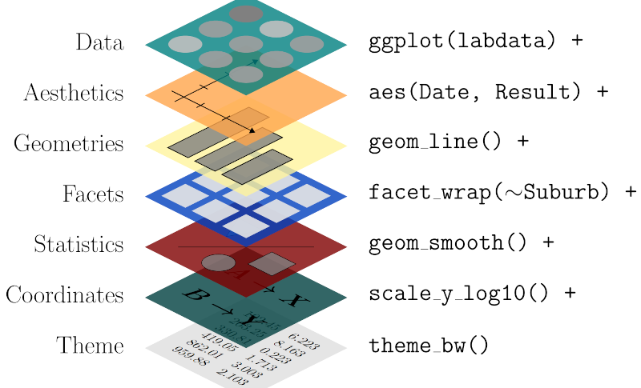
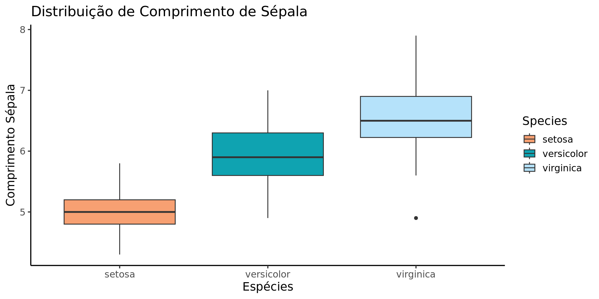
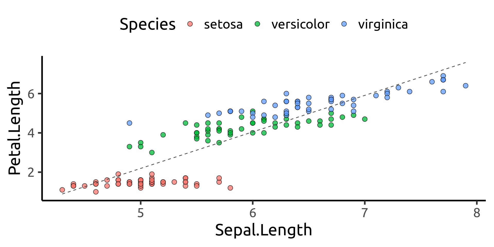
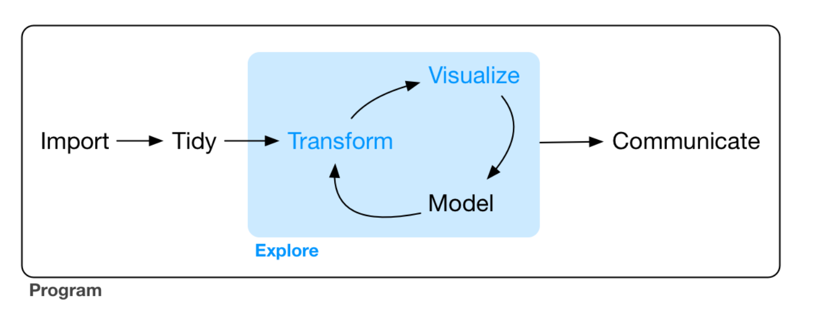
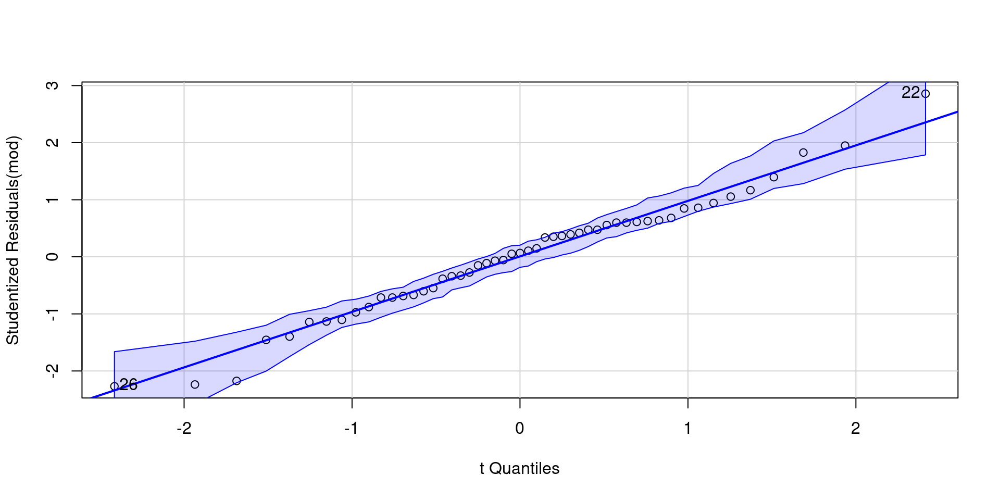
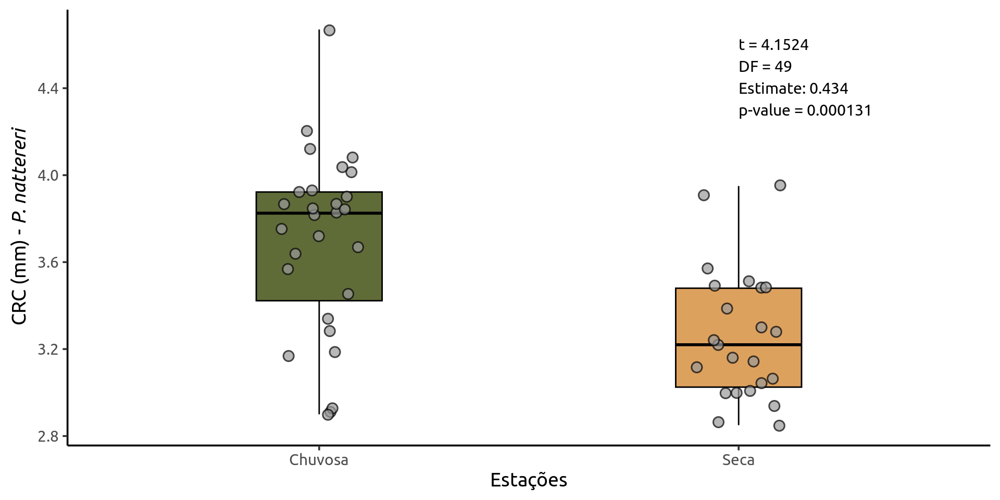
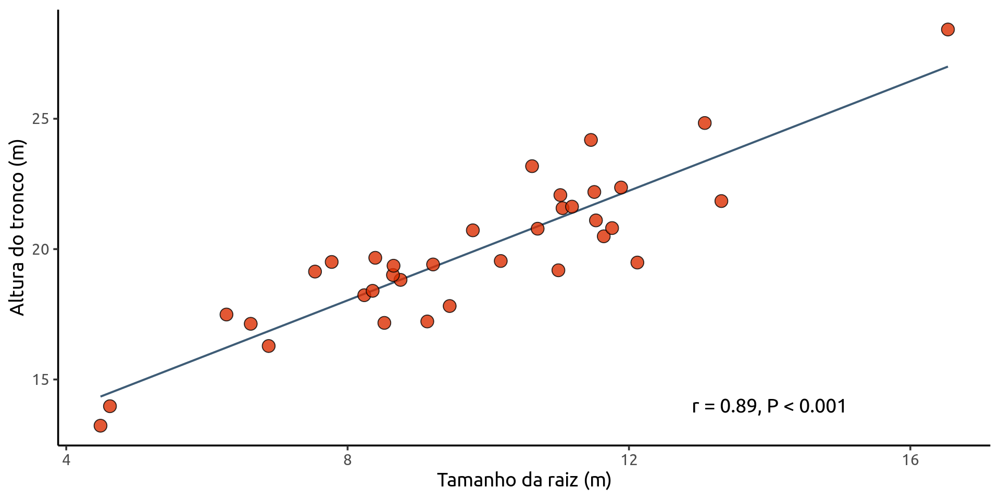
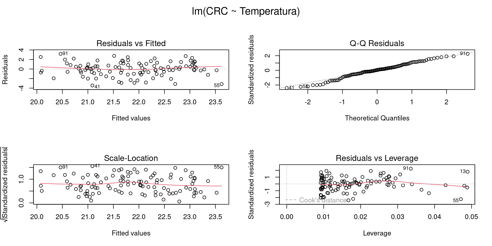
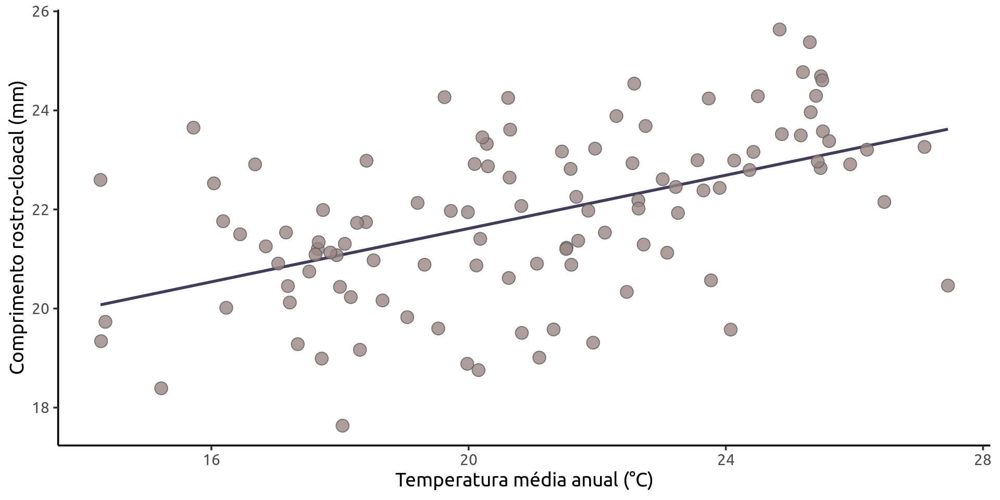
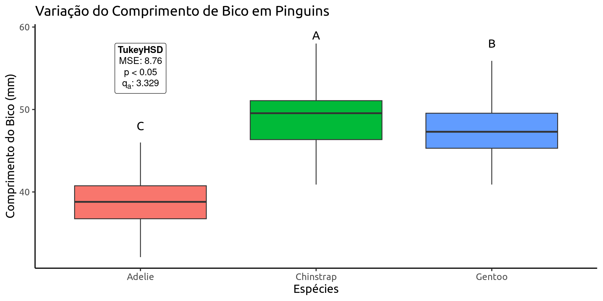

[1] 0.15[1] 44.66667Ciência de Dados amigável com tidyverse
PhD candidate Animal Sciences at PPZ-UESB
2024 - PhD Zootecnia (Melhoramento Genético Animal) (PPZ-UESB)
2024 - MSc Genética, Biodiversidade e Conservação (PPGGBC-UESB)
2020 - Biologia com Ênfase em Genética (UESB)
Consultoria Ambiental
Consultoria Estatística
Cursos e Mentorias
Desenvolvimento de Pacotes


Independência pra rodar suas análises
Um maior entendimento da sua própria pesquisa
Oportunidades de carreira
Reproducibilidade: caminha pra se tornar industry standard
e principalmente…
Você não ter que sair correndo atrás de alguém faltando 15 dias pra sua qualificação/defesa querendo aprender R pra rodar tuas análises e estatística pra interpretar teus dados.
Ambiente de Desenvolvimento
para linguagem R
Matemática Básica
Comentários
Qualquer texto precedido de # não é lido como código.
Objetos
object_name <- value
c() é a função de combinar elementos.
Nomes de Objetos
Todo objeto no R deve ter o nome iniciado por letra, e só podem conter _ ou .
i_use_snake_case
otherPeopleUseCamelCase
some.people.use.periods
And_aFew.People_RENOUNCEconventionPacotes são conjuntos de funções combinadas que extendem a capacidade da linguagem R.
Atualmente são mais de 22 mil pacotes no CRAN
Instalação
Carregamento
Atenção
Instalamos uma única vez (Por versão do R). Carregamos os pacotes todas as vezes que precisamos utilizar em nossos scripts.
Porque estatística e programação
já são difíceis pra cacete…
Vamos dar uma olhada no dataset iris que já vem com o R.
O comando str() nos diz a estrutura dos dados.
'data.frame': 150 obs. of 5 variables:
$ Sepal.Length: num 5.1 4.9 4.7 4.6 5 5.4 4.6 5 4.4 4.9 ...
$ Sepal.Width : num 3.5 3 3.2 3.1 3.6 3.9 3.4 3.4 2.9 3.1 ...
$ Petal.Length: num 1.4 1.4 1.3 1.5 1.4 1.7 1.4 1.5 1.4 1.5 ...
$ Petal.Width : num 0.2 0.2 0.2 0.2 0.2 0.4 0.3 0.2 0.2 0.1 ...
$ Species : Factor w/ 3 levels "setosa","versicolor",..: 1 1 1 1 1 1 1 1 1 1 ...O comando head() exibe as primeiras observações de um objeto.
Sepal.Length Sepal.Width Petal.Length Petal.Width Species
1 5.1 3.5 1.4 0.2 setosa
2 4.9 3.0 1.4 0.2 setosa
3 4.7 3.2 1.3 0.2 setosa
4 4.6 3.1 1.5 0.2 setosa
5 5.0 3.6 1.4 0.2 setosa
6 5.4 3.9 1.7 0.4 setosa
7 4.6 3.4 1.4 0.3 setosa
8 5.0 3.4 1.5 0.2 setosa
9 4.4 2.9 1.4 0.2 setosa
10 4.9 3.1 1.5 0.1 setosaBase R
Sepal.Length Sepal.Width
1 5.006 3.428Em português…
Com o dataset iris |>
Filtre pela species = setosa |>
Selecione colunas que começam com Sepal |>
Calcule as médias.
A gramática dos gráficos com ggplot2

library(ggplot2)
ggplot(iris) +
aes(x = Species, y = Sepal.Length) +
geom_boxplot(aes(fill = Species)) +
scale_fill_manual(values = c("#f7a072","#0fa3b1","#b5e2fa"))+
labs(title="Distribuição de Comprimento de Sépala",
x = "Espécies",
y = "Comprimento Sépala") +
theme_classic(base_size = 14, base_family = "DejaVu Sans")
library(ggplot2)
ggplot(iris,
aes(x = Sepal.Length,Petal.Length)) +
geom_point(aes(fill = Species),
size = 3,
shape = 21,
alpha = 0.75) +
geom_smooth(method = "lm",
linetype = 2,
linewidth = 0.5,
color = "grey30",
se = FALSE) +
theme_classic(base_size = 24,
base_family = "Ubuntu") +
theme(legend.position = "top",
legend.direction = "horizontal")

Os tipos de arquivos mais comuns são as planilhas tipo excel (.xls, .xlsx) e arquivos de texto delimitados (.csv,.tsv,.txt).
Pacote readxl fornece uma maneira simples de importar arquivos tipo Excel.
Por padrão read_excel() sempre importa a primeira folha de uma planilha.
Posso listar as folhas dentro de uma planilha com excel_sheets() …
e importar uma folha diferente pelo nome ou ordem com o argumento sheet
# A tibble: 6 × 3
Tabela 2. Número de pacientes homens e mulheres e os motivos que…¹ ...2 ...3
<chr> <chr> <chr>
1 <NA> <NA> <NA>
2 Motivos Home… Mulh…
3 Restauração 20 35
4 Implante 5 20
5 Limpeza 15 30
6 Extração 25 15
# ℹ abbreviated name:
# ¹`Tabela 2. Número de pacientes homens e mulheres e os motivos que frequentam o consultório odontológico durante o período de um ano.`# A tibble: 2 × 13
Temperatura Segunda Terça Quarta Quinta Sexta Sábado Domingo ...9 MÉDIA
<chr> <dbl> <dbl> <dbl> <dbl> <dbl> <dbl> <dbl> <lgl> <lgl>
1 Primeira semana 27 32 31 30 29 30 31 NA NA
2 Segunda semana 25 30 32 27 29 28 32 NA NA
# ℹ 3 more variables: VARIÂNCIA <lgl>, DP <lgl>, CV <lgl>Podemos definir além da folha um intervalo de células na mesma notação do Excel.
Agora nossos dados foram importados corretamente
# A tibble: 6 × 3
Motivos Homens Mulheres
<chr> <dbl> <dbl>
1 Restauração 20 35
2 Implante 5 20
3 Limpeza 15 30
4 Extração 25 15
5 Prótese 15 14
6 Clareamento 1 4# A tibble: 2 × 8
Temperatura Segunda Terça Quarta Quinta Sexta Sábado Domingo
<chr> <dbl> <dbl> <dbl> <dbl> <dbl> <dbl> <dbl>
1 Primeira semana 27 32 31 30 29 30 31
2 Segunda semana 25 30 32 27 29 28 32.csvSão arquivos separados por vírgula. O pacote readr possui duas funções para leitura de arquivos .csv.
# A tibble: 6 × 7
GG PCC CPT APT LPT LCX LSC
<chr> <dbl> <dbl> <dbl> <dbl> <dbl> <dbl>
1 NM 1850 189. 51.4 110. 66.4 105.
2 NM 1645 175. 57.8 109. 62.1 107.
3 NM 1935 175. 42.4 123. 55.9 119.
4 NM 2015 173. 55.0 121. 58.4 115.
5 NF 1145 139. 48.6 92.5 46.1 85.6
6 NF 1100 151. 45.8 97.6 66.3 75.8Em alguns casos nosso arquivo pode não ter um cabeçalho com o nome das variáveis.
O argumento header = FALSE garante que a primeira linha não seja lida como cabeçalhos neste caso.
A função read_csv() faz a leitura de um arquivo padrão separado por vírgulas, entretanto, alguns programas exportam .csv com ponto e vírgula como separador.
Pra isso temos a função read_csv2(). O processo de importação é idêntico.
str() exibe a estrutura dos dados
spc_tbl_ [16 × 7] (S3: spec_tbl_df/tbl_df/tbl/data.frame)
$ GG : chr [1:16] "NM" "NM" "NM" "NM" ...
$ PCC: num [1:16] 1850 1645 1935 2015 1145 ...
$ CPT: num [1:16] 189 175 175 173 139 ...
$ APT: num [1:16] 51.4 57.9 42.4 55 48.6 ...
$ LPT: num [1:16] 110.3 108.6 123.4 121.2 92.5 ...
$ LCX: num [1:16] 66.4 62.1 55.9 58.4 46.1 ...
$ LSC: num [1:16] 105.4 106.9 118.9 114.6 85.6 ...
- attr(*, "spec")=
.. cols(
.. GG = col_character(),
.. PCC = col_double(),
.. CPT = col_double(),
.. APT = col_double(),
.. LPT = col_double(),
.. LCX = col_double(),
.. LSC = col_double()
.. )
- attr(*, "problems")=<externalptr> glimpse() uma visão mais organizada da estrutura dos dados
Rows: 16
Columns: 7
$ GG <chr> "NM", "NM", "NM", "NM", "NF", "NF", "NF", "NF", "CM", "CM", "CM", …
$ PCC <dbl> 1850, 1645, 1935, 2015, 1145, 1100, 1270, 1170, 3085, 3075, 3075, …
$ CPT <dbl> 189.14, 174.84, 175.24, 173.25, 138.89, 150.94, 144.80, 155.00, 24…
$ APT <dbl> 51.41, 57.85, 42.36, 55.05, 48.57, 45.81, 39.79, 44.81, 70.03, 62.…
$ LPT <dbl> 110.30, 108.57, 123.44, 121.24, 92.46, 97.60, 108.17, 92.15, 144.6…
$ LCX <dbl> 66.41, 62.09, 55.90, 58.41, 46.06, 66.32, 45.39, 57.04, 62.30, 58.…
$ LSC <dbl> 105.36, 106.89, 118.92, 114.60, 85.57, 75.83, 99.73, 82.29, 129.23…names() lista o nome das colunas ou de itens de um objeto
A função select() do pacote dplyr nos permite selecionar colunas no dataset
# A tibble: 16 × 3
GG PCC APT
<chr> <dbl> <dbl>
1 NM 1850 51.4
2 NM 1645 57.8
3 NM 1935 42.4
4 NM 2015 55.0
5 NF 1145 48.6
6 NF 1100 45.8
7 NF 1270 39.8
8 NF 1170 44.8
9 CM 3085 70.0
10 CM 3075 62.7
11 CM 3075 56.0
12 CM 2635 65.5
13 CF 1710 61.4
14 CF 1835 65.5
15 CF 2035 56.4
16 CF 1880 61.6O primeiro argumento é o nome do dataset, seguido das colunas.
# A tibble: 16 × 5
GG APT LPT LCX LSC
<chr> <dbl> <dbl> <dbl> <dbl>
1 NM 51.4 110. 66.4 105.
2 NM 57.8 109. 62.1 107.
3 NM 42.4 123. 55.9 119.
4 NM 55.0 121. 58.4 115.
5 NF 48.6 92.5 46.1 85.6
6 NF 45.8 97.6 66.3 75.8
7 NF 39.8 108. 45.4 99.7
8 NF 44.8 92.2 57.0 82.3
9 CM 70.0 145. 62.3 129.
10 CM 62.7 139. 58.8 126.
11 CM 56.0 147. 73.7 131.
12 CM 65.5 126. 61.4 135.
13 CF 61.4 109. 61.5 110.
14 CF 65.5 106. 46.7 99.7
15 CF 56.4 108. 57.5 107.
16 CF 61.6 117. 59.1 106. Podemos informar um intervalo de colunas com inicio:fim
starts_with() Permite selecionar colunas que começam com um termo
Petal.Length Petal.Width
1 1.4 0.2
2 1.4 0.2
3 1.3 0.2ends_with() Permite selecionar colunas que terminam com um termo
Sepal.Length Petal.Length
1 5.1 1.4
2 4.9 1.4
3 4.7 1.3contains() Permite selecionar colunas que contenham o termo
A função filter() nos permite filtrar observações com base em condições.
As condições são avaliadas logicamente retornando em TRUE ou FALSE.
Operadores:
Igualdade: ==
Diferença: !=
Comparação: > < >= <=
Lógicos:
E (And) &
Ou (or) |
Sepal.Length Sepal.Width Petal.Length Petal.Width Species
1 5.4 3.9 1.7 0.4 setosa
2 4.8 3.4 1.6 0.2 setosa
3 5.7 3.8 1.7 0.3 setosaO comando mutate() nos permite criar novas variáveis ou alterar as existentes.
# A tibble: 6 × 8
GG PCC CPT APT LPT LCX LSC PCC_KG
<chr> <dbl> <dbl> <dbl> <dbl> <dbl> <dbl> <dbl>
1 NM 1850 189. 51.4 110. 66.4 105. 1.85
2 NM 1645 175. 57.8 109. 62.1 107. 1.64
3 NM 1935 175. 42.4 123. 55.9 119. 1.94
4 NM 2015 173. 55.0 121. 58.4 115. 2.02
5 NF 1145 139. 48.6 92.5 46.1 85.6 1.14
6 NF 1100 151. 45.8 97.6 66.3 75.8 1.1 Por padrão a nova variável é adicionada ao final do dataset, mas esse comportamento pode ser modificado usando os argumentos .before ou .after e explicitando antes ou depois de qual coluna desejamos nossa nova variável.
O operador |> (pipe) liga operações em um fluxo contínuo da esquerda para a direita.
O pipe original %>% surgiu com o tidyverse, seu impacto foi tão grande na linguagem que há alguns anos atrás os desenvolvedores do R incluíram um operador nativo na linguagem.
Utilizando o pipe podemos realizar uma sequência de inúmeras operações evitando a criação de objetos intermediários para armazenar os resultados.
No fluxo o objeto à esquerda será o alvo da operação da direita.
Num fluxo com o pipe o operador sempre deve aparecer ao final da linha em caso de quebra:
Sepal.Length Sepal.Width Petal.Length Petal.Width Species
1 5.1 3.5 1.4 0.2 setosa
2 4.9 3.0 1.4 0.2 setosa
3 4.7 3.2 1.3 0.2 setosaIsto aqui causa um erro:
Error: unexpected '|>' in "|>"A função summarise() do pacote dplyr nos permite gerar estatísticas descritivas
summary()A função nativa summary() nos fornece um rol de estatísticas descritivas
Motivos Homens Mulheres
Length:6 Min. : 1.00 Min. : 4.00
Class :character 1st Qu.: 7.50 1st Qu.:14.25
Mode :character Median :15.00 Median :17.50
Mean :13.50 Mean :19.67
3rd Qu.:18.75 3rd Qu.:27.50
Max. :25.00 Max. :35.00 Esta função embora limitada no rol de estatísticas fornecidas, é muito útil para um diagnóstico rápido dos dados. Ela nos permite avaliar o número de dados perdidos (NA) bem como valores fora do intervalo esperado, nossos outliers.
Na grande maioria das vezes precisamos calcular estatísticas descritivas agrupadas por níveis de variáveis categóricas. O pacote rstatix é muito eficiente nessa tarefa.
# A tibble: 12 × 5
Species variable n mean sd
<fct> <fct> <dbl> <dbl> <dbl>
1 setosa Sepal.Length 50 5.01 0.352
2 setosa Sepal.Width 50 3.43 0.379
3 setosa Petal.Length 50 1.46 0.174
4 setosa Petal.Width 50 0.246 0.105
5 versicolor Sepal.Length 50 5.94 0.516
6 versicolor Sepal.Width 50 2.77 0.314
7 versicolor Petal.Length 50 4.26 0.47
8 versicolor Petal.Width 50 1.33 0.198
9 virginica Sepal.Length 50 6.59 0.636
10 virginica Sepal.Width 50 2.97 0.322
11 virginica Petal.Length 50 5.55 0.552
12 virginica Petal.Width 50 2.03 0.275A função group_by() do dplyr agrupa o nossos dados pelos níveis do fator Species, permitindo que as estatísticas sejam calculadas segmentadas e não como um todo para cada variável.
Variando o argumento type temos acesso a diversas estatísticas. Experimente utilizar type = "full".
Nesta sessão utilizaremos alguns pacotes auxiliares, caso não tenham instalado ainda:
Utilizaremos também dados do pacote ecodados, vocês podem fazer a instalação rodando devtools::install_github("paternogbc/ecodados").
Este pacote é parte do excelente livro Análises Ecológicas no R de Da Silva et al. (2022) e é simplesmente um dos melhores livros dedicados a ciência de dados para Ecologia, disponível gratuitamente na internet. Obrigado aos autores mais uma vez!
Um teste t baseado em duas amostras é usado para testar a diferença entre duas médias populacionais \(\mu_1\) e \(\mu_2\) quando \(\sigma_1\) e \(\sigma_2\) são desconhecidos, e portanto usamos os desvios amostrais.
\[t = \frac{\bar{x_1}-\bar{x_2}}{s}\sqrt{\frac{n_1\times n_2}{n_1 + n_2}}\]
Premissas do Teste \(t\):
Usaremos os dados de comprimento rostro-cloacal (CRC) de machos de anfíbios da espécie Physalaemus nattereri (Anura:Leptodactylidae) amostrados em diferentes estações do ano.
Pergunta: Existe diferença na média co CRC em P. nattereri entre as estações?
Hipótese Nula: As médias de CRC são iguais.
Hipótese Alternativa: As médias de CRC são diferentes entre as estações.
Antes de realizarmos o teste \(t\), precisamos nos certificar de que nossos dados atendem as premissas.
QQ Plot

Podemos ainda utilizar o teste de Shapiro-Wilk e avaliar a normalidade
Shapiro-Wilk normality test
data: residuals(mod)
W = 0.98307, p-value = 0.6746e a heterocedasticidade (homogeneidade) da variância com o teste de Levene
Uma vez satisfeitas as premissas, podemos prosseguir e realizar o teste \(t\):
Two Sample t-test
data: CRC by Estacao
t = 4.1524, df = 49, p-value = 0.000131
alternative hypothesis: true difference in means between group Chuvosa and group Seca is not equal to 0
95 percent confidence interval:
0.2242132 0.6447619
sample estimates:
mean in group Chuvosa mean in group Seca
3.695357 3.260870 Ao apresentar os seu resultados inclua:
A estatística \(t\): \(t = 4.1524\)
O p-valor: \(p-value = 0.000131\)
Graus de Liberdade: \(df = 49\)
Diferenca entre as médias: \(0.434\)
extrafont::loadfonts(quiet = TRUE)
ggplot(data = crc_phy_nat, aes(x = Estacao, y = CRC, color = Estacao)) +
labs(x = "Estações",
y = expression(paste("CRC (mm) - ", italic("P. nattereri")))) +
geom_boxplot(fill = c("#606c38", "#dda15e"), color = "black",
outlier.shape = NA, width = .3) +
geom_jitter(shape = 21, position = position_jitter(0.1),
cex = 3, alpha = 0.7, stroke = .8,
fill = "grey60") +
scale_color_manual(values = c("black", "black")) +
annotate("text",
label ="t = 4.1524",
size = 4,
x = "Seca",
y = 4.6,
hjust = 0,
family = "Ubuntu") +
annotate("text",
label ="DF = 49",
size = 4,
x = "Seca",
y = 4.5,
hjust = 0,
family = "Ubuntu") +
annotate("text",
label ="Estimate: 0.434",
size = 4,
x = "Seca",
y = 4.4,
hjust = 0,
family = "Ubuntu") +
annotate("text",
label ="p-value = 0.000131",
size = 4,
x = "Seca",
y = 4.3,
hjust = 0,
family = "Ubuntu") +
theme_classic(base_size = 14,
base_family = "Ubuntu") +
theme(legend.position = "none")
No teste \(t\) pareado temos duas observações da mesma unidade amostral subetida ao tratamento/efeito de interesse. O nosso objetivo é determinar se a diferença entre observações é zero.
Premissas:
Novamente vamos utilizar dados do pacote ecodados seguindo o exemplo disponível em Da Silva et al. (2022). Vamos utilizar dados de riqueza de espécies de artrópodes em uma área antes e depois de um processo de queimada.
Pergunta: A riqueza de espécies de artrópodes é afetada pelas queimadas?
Hipótese Nula: A riqueza de espécies é igual antes e depois.
Rows: 54
Columns: 3
$ Areas <int> 1, 2, 3, 4, 5, 6, 7, 8, 9, 10, 11, 12, 13, 14, 15, 16, 17, 18,…
$ Riqueza <int> 92, 74, 96, 89, 76, 80, 62, 100, 50, 137, 54, 89, 116, 66, 79,…
$ Estado <chr> "Pre-Queimada", "Pre-Queimada", "Pre-Queimada", "Pre-Queimada"… Estado n
1 Pos-Queimada 27
2 Pre-Queimada 27A função é a mesma t.test(), porém precisamos informar que agora estamos avaliando dados pareados, isso é feito pelo argumento paired = TRUE. Uma outra diferença é que para o teste pareado, não podemos utilizar a notação de fórmula, precisamos declarar explicitamente nossos dois vetores de observações. O restante da análise segue a anterior.
rich_antes <- art_rich |>
filter(Estado == "Pre-Queimada") |>
pull(Riqueza)
rich_depois <- art_rich |>
filter(Estado == "Pos-Queimada") |>
pull(Riqueza)
par_T <- t.test(x = rich_antes, y = rich_depois, paired = TRUE)
par_T
Paired t-test
data: rich_antes and rich_depois
t = 7.5788, df = 26, p-value = 4.803e-08
alternative hypothesis: true mean difference is not equal to 0
95 percent confidence interval:
32.47117 56.63994
sample estimates:
mean difference
44.55556 Como no exemplo anterior podemos apresentar nossos resultados de maneira gráfica. A função ggpaired() do pacote ggpubr nos fornece uma maneira bastante didática de apresentar nossos resultados.
ggpubr::ggpaired(art_rich, x = "Estado", y = "Riqueza",
color = "Estado", line.color = "gray", line.size = 0.8,
palette = c("#606c38", "#dda15e"), width = 0.5,
point.size = 4, xlab = "Estado das localidades",
ylab = "Riqueza de Espécies") +
expand_limits(y = c(0, 150)) +
theme_classic(base_size = 14, base_family = "Ubuntu") +
theme(legend.direction = "horizontal",
legend.position = "top")Uma correlação é uma relação entre duas variáveis. Os dados podem ser representados por pares ordenados (x, y), sendo x a variável independente (ou explanatória) e y a variável dependente (ou resposta). (Larson and Farber, 2023)
dados_pib_co2 <- tibble(
PIB = c(1.7, 1.2, 2.5, 2.8, 3.6, 2.2, 0.8, 1.5, 2.4, 5.9),
CO2 = c(552.6, 462.3, 475.4, 374.3, 748.5, 400.9, 253.0, 318.6, 496.8, 1180.6)
)
dados_pib_co2# A tibble: 10 × 2
PIB CO2
<dbl> <dbl>
1 1.7 553.
2 1.2 462.
3 2.5 475.
4 2.8 374.
5 3.6 748.
6 2.2 401.
7 0.8 253
8 1.5 319.
9 2.4 497.
10 5.9 1181.library(ggtext)
ggplot(dados_pib_co2,
aes(x = PIB, y = CO2)) +
geom_point(shape = 21, size =4, fill = "grey70", color = "black")+
theme_bw(base_size = 14, base_family = "Ubuntu") +
scale_x_continuous(breaks = 1:6) +
scale_y_continuous(breaks = seq(0,1200,by = 200))+
labs(title = "Relação entre PIB e a quantidade de CO2 emitida,
para amostra com 10 países.",
x = "PIB <br> (em trilhões de dólares)",
y = "CO<sub>2</sub> <br> (em milhões de toneladas métricas)") +
theme(axis.title = element_markdown())Mais uma vez usaremos dados do ecodados de (Da Silva et al., 2022). Neste exemplo, avaliaremos a correlação entre a altura do tronco e o tamanho da raiz medidos em 35 indivíduos de uma espécie vegetal arbustiva.
Rows: 35
Columns: 2
$ Tamanho_raiz <dbl> 10.177049, 6.622634, 7.773629, 11.055257, 4.487274, 11.…
$ Tamanho_tronco <dbl> 19.54383, 17.13558, 19.50681, 21.57085, 13.22763, 21.62…Utilizaremos a função cor.test() explicitando que queremos o coeficiente de Pearson no argumento method="pearson".
Pearson's product-moment correlation
data: arbustos$Tamanho_raiz and arbustos$Tamanho_tronco
t = 11.49, df = 33, p-value = 4.474e-13
alternative hypothesis: true correlation is not equal to 0
95 percent confidence interval:
0.7995083 0.9457816
sample estimates:
cor
0.8944449 arbustos <- ecodados::correlacao
ggplot(data = arbustos, aes(x = Tamanho_raiz,
y = Tamanho_tronco)) +
labs(x = "Tamanho da raiz (m)", y = "Altura do tronco (m)") +
geom_smooth(method = lm, se = FALSE, color = "#3e5c76",
linetype = "solid", linewidth=0.7) +
geom_point(size = 4, shape = 21, fill = "#dc2f02", alpha = 0.8) +
annotate("text",
x = 14, y = 14,
label = "r = 0.89, P < 0.001",
color = "black", size = 5,
family = "Ubuntu") +
theme_classic(base_size = 14, base_family = "Ubuntu") +
theme(legend.position = "none")
Figure 1: Adaptado de Da Silva et al. (2022)
A regressão linear simples é usada para analisar a relação entre uma variável preditora (plotada no eixo-X) e uma variável resposta (plotada no eixo-Y). As duas variáveis devem ser contínuas. Diferente das correlações, a regressão assume uma relação de causa e efeito entre as variáveis. O valor da variável preditora (X) causa, direta ou indiretamente, o valor da variável resposta (Y). Assim, Y é uma função linear de X (Da Silva et al., 2022).
\[\Large y = \beta_0+\beta_1 X_i + \varepsilon_i\] Este é o modelo matemático que define uma Regressão Linear Simples, onde:
\(\large y\) é o nosso vetor de observações da nossa variável resposta
\(\large \beta_0\) é o intercepto (intercept) que representa o valor da função quando \(X = 0\)
\(\large \beta_1\) é a inclinação (slope) que mede a mudança na variável \(y\) para cada mudança de unidade da variável \(X\)
\(\large \varepsilon_i\) é no nosso vetor de erros aleatórios ou resíduos, é toda variabilidade em \(\large y\) que não pode ser explicada por \(X\)
A regressão linear também possui premissas:
As amostras devem ser independentes
As unidades amostrais são selecionadas aleatoriamente
Distribuição normal (gaussiana) dos resíduos
Homogeneidade da variância dos resíduos
Avaliaremos a relação entre o gradiente de temperatura média anual (°C) e o tamanho médio do comprimento rostro-cloacal (CRC em mm) de populações de Dendropsophus minutus (Anura:Hylidae) amostradas em 109 localidades no Brasil.
Rows: 109
Columns: 4
$ Municipio <chr> "Acorizal", "Alpinopolis", "Alto_Paraiso", "Americana", "…
$ CRC <dbl> 22.98816, 22.91788, 21.97629, 23.32453, 22.83651, 20.8698…
$ Temperatura <dbl> 24.13000, 20.09417, 21.86167, 20.28333, 25.47333, 20.1216…
$ Precipitacao <dbl> 1228.2, 1487.6, 1812.4, 1266.2, 2154.0, 1269.2, 1940.6, 1…Pergunta: A temperatura afeta o tamanho do CRC de populações de Dendropsophus minutus?
Utilizando a função plot() podemos fazer a inspeção visual dos resíduos e checar a normalidade e a homogeneidade da variância.

Confirmado que nossos dados atendem as premissas de normalidade e heterocedasticidade dos resíduos, podemos agora ver os resultados da nossa regressão usando as funções anova() e summary(). Falaremos de ANOVA (Análise de Variância) na próxima sessão, mas a função anova() quando fornecida um único modelo nos retorna a famosa Tabela da Anova, que nos mostra se os termos do nosso modelo foram significativos.
A nossa velha amiga summary() nos fornece também a significância dos termos do modelo, e ainda os valores dos coeficientes, e do coeficiente de determinação (\(R^2\)), que indica o quanto da variação em \(y\) é explicada pela nossa variável \(X\).
Call:
lm(formula = CRC ~ Temperatura, data = den_min)
Residuals:
Min 1Q Median 3Q Max
-3.4535 -0.7784 0.0888 0.9168 3.1868
Coefficients:
Estimate Std. Error t value Pr(>|t|)
(Intercept) 16.23467 0.91368 17.768 < 2e-16 ***
Temperatura 0.26905 0.04313 6.239 9.01e-09 ***
---
Signif. codes: 0 '***' 0.001 '**' 0.01 '*' 0.05 '.' 0.1 ' ' 1
Residual standard error: 1.442 on 107 degrees of freedom
Multiple R-squared: 0.2667, Adjusted R-squared: 0.2599
F-statistic: 38.92 on 1 and 107 DF, p-value: 9.011e-09Podemos apresentar nossos resultados por meio de um gráfico de dispersão como vimos anteriormente.
ggplot(data = den_min, aes(x = Temperatura, y = CRC)) +
labs(x = "Temperatura média anual (°C)",
y = "Comprimento rostro-cloacal (mm)") +
geom_smooth(method = lm, se = FALSE,
color = "#413c58", alpha = 0.8) +
geom_point(size = 4, shape = 21,
fill = "#988683", color="#5c5c5e", alpha = 0.8) +
theme_classic(base_size = 14, base_family = "Ubuntu") +
theme(legend.position = "none")
Aqui vale comentar sobre as diferentes hipóteses que são testadas em cada função.
A função summary() realiza um teste \(t\) para cada um dos betas do modelo, no nosso caso de uma regressão linear simples o intercepto e o slope. A hipótese nula neste caso é:
\[H_0: \beta_i = 0 \quad versus \quad H_a: \beta_i \neq 0\]
Ou seja, o teste avalia se a variável explicativa \(X\) tem efeito significativo sobre \(y\) controlando pelas outras variáveis do modelo.
Já a função anova() está fazendo uma análise de variância (ANOVA) que testa a seguinte hipótese nula global de que todos os coeficientes, exceto o intercepto, são iguais a zero:
\[H_0: \beta_1 = \beta_2 = \cdots \beta_n = 0\]
Mas como falamos de uma regressão linear simples, testamos somente o nosso \(\beta_1\).
Ou seja, o teste \(F\) da ANOVA avalia se o modelo completo com as variáveis preditoras explica significativamente mais variância do que um modelo nulo (só com o intercepto).
Se o valor-p do teste \(F\) for pequeno, rejeitamos \(H_0\) e concluímos que pelo menos uma variável tem efeito significativo sobre a resposta.
Análise de variância com um fator é uma técnica de teste de hipótese usada para comparar as médias de três ou mais populações. A análise de variância geralmente é abreviada como ANOVA.
Como mencionado anteriormente, a ANOVA é um teste de razão de variâncias. O que a estatistica do teste avalia de maneira resumida:
\[Estatística \ do \ Teste = \frac{Variância \ dentro \ dos \ grupos}{Variância \ entre \ grupos}\]
A Estatística \(F\) é o quociente destas duas variâncias, e nossa hipótese nula na ANOVA testa se a média dos grupos é igual:
\[H_0: \mu_1 = \mu_2 = \cdots \mu_n\]
Premissas da ANOVA:
| Fontes de Variação (FV) | Graus de Liberdade (GL) | Soma de Quadrados (SQ) | Quadrado Médio (QM) | F |
|---|---|---|---|---|
| Tratamento (entre) |
\(p-1\) | \(SQ_{Trat}\) | \(\frac{SQ_{Trat}}{p-1}\) | \(\frac{QM_{Trat}}{QM_{Res}}\) |
| Erro Experimental (dentro) |
\(n-p\) | \(SQ_{Res}\) | \(\frac{SQ_{Res}}{n-p}\) | |
| Total | \(n-1\) | \(SQ_{Total}\) |
Esta é a famosa tabela da ANOVA, a mesma tabela que é retornada pelas funções que utilizaremos aqui no R. As somas de quadrado podem ser obtidas como:
\(\small \displaystyle SQ_{Total} = \sum_{i=1,j=1}^{I,J}Y_{ij}^2 - \frac{\displaystyle \left( \sum_{i=1,j=1}^{I,J}Y_{ij}\right)^2}{IJ}\)
\(\small \displaystyle SQ_{Trat} = \sum_{i=1}^{I}\frac{T_{i}^2}{J} - \frac{\displaystyle \left( \sum_{i=1,j=1}^{I,J}Y_{ij}\right)^2}{IJ}\)
\(\small SQ_{Total} \ = \ SQ_{Trat} + SQ_{Res}\)
Na ANOVA de um fator testamos o efeito de uma única variável categórica (Tratamento) sobre nossa variável dependente (\(y\)).
Pergunta: Existe diferença no tamanho do bico (bill_length_mm) entre as diferentes espécies de pinguim?
# A tibble: 6 × 8
species island bill_length_mm bill_depth_mm flipper_length_mm body_mass_g
<fct> <fct> <dbl> <dbl> <int> <int>
1 Adelie Torgersen 39.1 18.7 181 3750
2 Adelie Torgersen 39.5 17.4 186 3800
3 Adelie Torgersen 40.3 18 195 3250
4 Adelie Torgersen NA NA NA NA
5 Adelie Torgersen 36.7 19.3 193 3450
6 Adelie Torgersen 39.3 20.6 190 3650
# ℹ 2 more variables: sex <fct>, year <int>Diferente da última sessão, utilizaremos a função aov() para realizarmos a ANOVA.
Assim como fizemos com nosso modelo de regressão linear podemos avaliar nossos resíduos visualmente.
Nossos resíduos parecem seguir normalidade e homocedasticidade. Mas podemos confirmar realizando os testes de Shapiro-Wilk (normalidade) e Bartlett (homocedasticidade).
Lembre-se que sempre testamos os resíduos!
Shapiro-Wilk normality test
data: residuals(anova_bico)
W = 0.98903, p-value = 0.01131
Bartlett test of homogeneity of variances
data: bill_length_mm by species
Bartlett's K-squared = 5.6179, df = 2, p-value = 0.06027Lembrando que a hipótese nula em ambos os testes é de que os dados seguem normalidade/homocedasticidade. Confirmamos assim o nosso diagnístico visual.
Df Sum Sq Mean Sq F value Pr(>F)
species 2 7194 3597 410.6 <2e-16 ***
Residuals 339 2970 9
---
Signif. codes: 0 '***' 0.001 '**' 0.01 '*' 0.05 '.' 0.1 ' ' 1
2 observations deleted due to missingnessE aqui obtemos a nossa tabela da ANOVA. E com base no p-valor obtido podemos confirmar que existe efeito de Espécie sobre o Tamanho do Bico dos Pinguins. Em relação a nossa hipótese nula, isso significa dizer que pelo menos um dos grupos avaliados possui média diferente dos demais.
Uma vez sabendo que existe diferença significativa, agora precisamos realizar um pós-teste de comparação de médias entre os grupos. Para isso vamos utilizar o pacote agricolae. Este pacote é excelente por possuir diversos pos-testes para anova, entre eles Tukey, SNK, e Duncan.
Tukey HSD
O Teste Tukey HSD (honestly significant difference) é amplamente reconhecido por controlar de forma rigorosa a taxa de erro familiar, permitindo comparações par a par entre todas as médias com um critério bastante robusto.
Study: anova_bico ~ "species"
HSD Test for bill_length_mm
Mean Square Error: 8.760732
species, means
bill_length_mm std r se Min Max Q25 Q50 Q75
Adelie 38.79139 2.663405 151 0.2408694 32.1 46.0 36.75 38.80 40.750
Chinstrap 48.83382 3.339256 68 0.3589349 40.9 58.0 46.35 49.55 51.075
Gentoo 47.50488 3.081857 123 0.2668810 40.9 59.6 45.30 47.30 49.550
Alpha: 0.05 ; DF Error: 339
Critical Value of Studentized Range: 3.329136
Groups according to probability of means differences and alpha level( 0.05 )
Treatments with the same letter are not significantly different.
bill_length_mm groups
Chinstrap 48.83382 a
Gentoo 47.50488 b
Adelie 38.79139 cSNK
O Teste Student-Newman-Keuls (SNK) realiza comparações par a par de maneira sequencial, equilibrando a sensibilidade para detectar diferenças com um critério menos conservador que o Tukey HSD, mas mais rigoroso que o teste de Duncan.
Study: anova_bico ~ "species"
Student Newman Keuls Test
for bill_length_mm
Mean Square Error: 8.760732
species, means
bill_length_mm std r se Min Max Q25 Q50 Q75
Adelie 38.79139 2.663405 151 0.2408694 32.1 46.0 36.75 38.80 40.750
Chinstrap 48.83382 3.339256 68 0.3589349 40.9 58.0 46.35 49.55 51.075
Gentoo 47.50488 3.081857 123 0.2668810 40.9 59.6 45.30 47.30 49.550
Groups according to probability of means differences and alpha level( 0.05 )
Means with the same letter are not significantly different.
bill_length_mm groups
Chinstrap 48.83382 a
Gentoo 47.50488 b
Adelie 38.79139 cDuncan
O Teste de Duncan adota uma abordagem mais liberal, facilitando a identificação de intervalos de similaridade entre as médias, mas com uma margem maior de risco de erro do Tipo I.
Study: anova_bico ~ "species"
Duncan's new multiple range test
for bill_length_mm
Mean Square Error: 8.760732
species, means
bill_length_mm std r se Min Max Q25 Q50 Q75
Adelie 38.79139 2.663405 151 0.2408694 32.1 46.0 36.75 38.80 40.750
Chinstrap 48.83382 3.339256 68 0.3589349 40.9 58.0 46.35 49.55 51.075
Gentoo 47.50488 3.081857 123 0.2668810 40.9 59.6 45.30 47.30 49.550
Groups according to probability of means differences and alpha level( 0.05 )
Means with the same letter are not significantly different.
bill_length_mm groups
Chinstrap 48.83382 a
Gentoo 47.50488 b
Adelie 38.79139 cDunnet
O Teste Dunnett é particularmente útil quando o objetivo principal é comparar cada tratamento com um grupo de controle, focando essa análise e ajustando as comparações para esse propósito.
Para realizar esse teste usaremos o pacote multcomp.
Apresentando os resultados
Além da apresentação da tabela podemos reportar nossos resultados graficamente com boxplots e adicionar os grupos do teste de Tukey.
library(ggtext)
grupos <- tibble(species = factor(c("Adelie", "Chinstrap", "Gentoo")),
grupos = c("C","A","B"),
ymax = c(48,59,58))
tukey <- tibble(species = "Adelie",
label = "<b>TukeyHSD</b><br>MSE: 8.76<br>p < 0.05<br>q<sub>a</sub>: 3.329",
y = 55)
pinguins |>
ggplot(aes(x=species, y=bill_length_mm, fill = species)) +
geom_boxplot(outliers = FALSE)+
annotate("text", x=grupos$species,
y = grupos$ymax,
label = grupos$grupos,
family = "Ubuntu",
size = 5) +
geom_richtext(data = tukey, aes(x = species, y = 55, label = label),
fill = NA) +
theme_classic(base_size = 14, base_family = "Ubuntu") +
theme(legend.position = "none") +
labs(title = "Variação do Comprimento de Bico em Pinguins",
x = "Espécies",
y = "Comprimento do Bico (mm)")
Two Sample t-test
data: CRC by Estacao
t = 4.1524, df = 49, p-value = 0.000131
alternative hypothesis: true difference in means between group Chuvosa and group Seca is not equal to 0
95 percent confidence interval:
0.2242132 0.6447619
sample estimates:
mean in group Chuvosa mean in group Seca
3.695357 3.260870
pbarrosbio@gmail.com
https://paulobarros.com.br

{kind=link}
{kind=link}
{kind=link}
{kind=link}